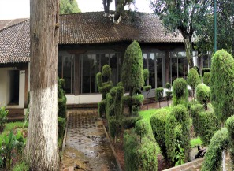
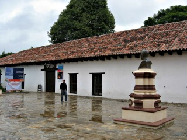
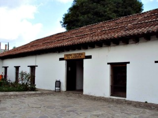
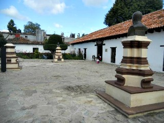
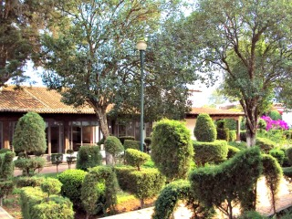

El centro cultural del Carmen fue construido en 1974 en él se realizan obras de teatro, danza, espectáculos infantiles, festivales, cines, conferencias, asambleas, reuniones de trabajo y exposiciones pictóricas.
Se encuentra ubicado sobre la avenida miguel hidalgo S/N
Si usted se encuentra ubicado en el arco del carmen puede caminar hacia la parte de atrás del arco pasando por la sala de bellas artes y justo ahí vera el centro cultural del carmen.
En el lugar usted puede realizar actividades como:
* Fotografía
* Visita a centros culturales
* Visita a centros de convenciones
* Asistencia a eventos científicos
* Asistencia a eventos culturales
* Asistencia a festivales de cine
* Asistencia a festivales de música
* Asistencia a festivales folklóricos * Asistencia a festivales de ópera y ballet





posicione el mouse sobre las imágenes